ANATÓMIAI ÁTTEKINTŐ01 / TESTTÁJAK
TESTTÁJÉK
Fej es nyak izomzata
14 adatlap1. Felületes extenzor izomzat
Ezek az izmok együttműködve a fej és a nyak hátrahajlítását (extenzióját), egyoldali működéskor pedig azok oldalra hajlítását és forgatását hozzák létre, miközben a flexorokkal közösen stabilizálják a fejet.
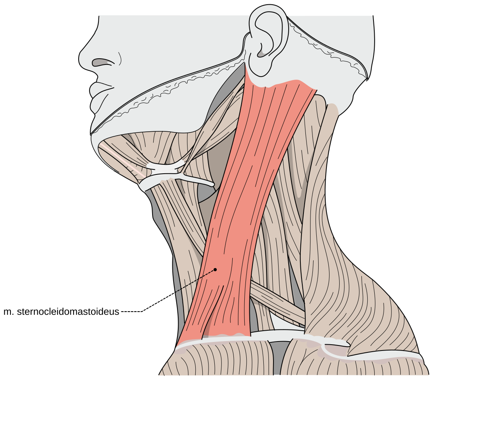
Fej es nyak izomzata↗I. Nyaki flexorok (Hajlítók)
Fejbiccentő izom (m. sternocleidomastoideus) – tónusos
EredésA szegycsont markolata (manubrium sterni) és a kulcscsont szegycsonthoz közeli (mediális) harmada.
TapadásA halántékcsont csecsnyúlványa (processus mastoideus) és a nyakszirtcsont felső tarkóvonala.
MozgásEgyoldali működéskor azonos oldalra hajlítja és ellenkező oldalra fordítja a fejet, kétoldali működéskor pedig előrehajtja (flexió) a nyakat és hátraszegi a fejet.
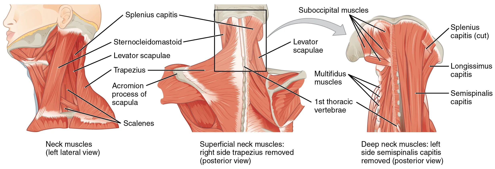
Fej es nyak izomzata↗I. Nyaki flexorok (Hajlítók)
Lépcsőizmok (mm. scaleni – anterior, medius, posterior) – tónusosak
EredésA nyakcsigolyák harántnyúlványai (C2–C7).
TapadásAz első és a második borda felső felszíne.
MozgásRögzített bordák mellett azonos oldalra hajlítják és enyhén elfordítják a nyakat (kétoldali működéskor előrehajlítják), rögzített nyaknál pedig emelik az első két bordát belégzéskor.
3. Egyéb (mély) flexorok és nyelvcsonti izmok
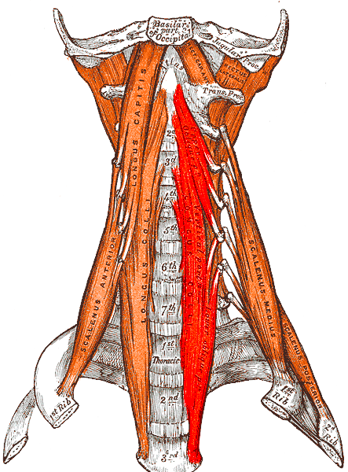
Fej es nyak izomzata↗I. Nyaki flexorok (Hajlítók)
Hosszú nyakizom (m. longus colli) – fázisos:
Eredés / TapadásA nyaki és felső háti csigolyák testén és harántnyúlványain ered, és a felsőbb nyakcsigolyák testén, illetve az atlasz elülső ívén tapad.
MozgásElőrehajtja és stabilizálja a nyaki gerincet, valamint enyhén azonos oldalra hajlítja és fordítja azt.
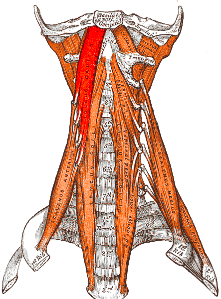
Fej es nyak izomzata↗I. Nyaki flexorok (Hajlítók)
Hosszú fejizom (m. longus capitis) – fázisos:
Eredés / TapadásA 3–6. nyakcsigolya harántnyúlványain ered, és a nyakszirtcsont alapi részén tapad.
MozgásElőrehajtja a fejet és a felső nyaki szakaszt.
 Fej es nyak izomzata↗
Fej es nyak izomzata↗I. Nyaki flexorok (Hajlítók)
Elülső és oldalsó egyenes fejizom (m. rectus capitis anterior et lateralis) – fázisosak:
Eredés / TapadásAz első nyakcsigolya (atlasz) oldalsó tömegéről és harántnyúlványáról erednek, és a nyakszirtcsonton tapadnak.
MozgásElőre- és oldalra biccentik a fejet a felső fejízületben, miközben stabilizálják a koponya és az első csigolya kapcsolatát.
 Fej es nyak izomzata↗
Fej es nyak izomzata↗I. Nyaki flexorok (Hajlítók)
Nyelvcsonti izmok (mm. suprahyoidei et infrahyoidei) – vegyes (főként fázisos / stabilizáló):
Eredés / TapadásA koponyaalap, az állkapocs, illetve a szegycsont és a lapocka között feszülnek ki, középen a nyelvcsonton tapadva.
MozgásSegítő (szinergista) izomként részt vesznek a nyak előrehajlításában, valamint mozgatják és rögzítik a nyelvcsontot nyelés és beszéd közben.
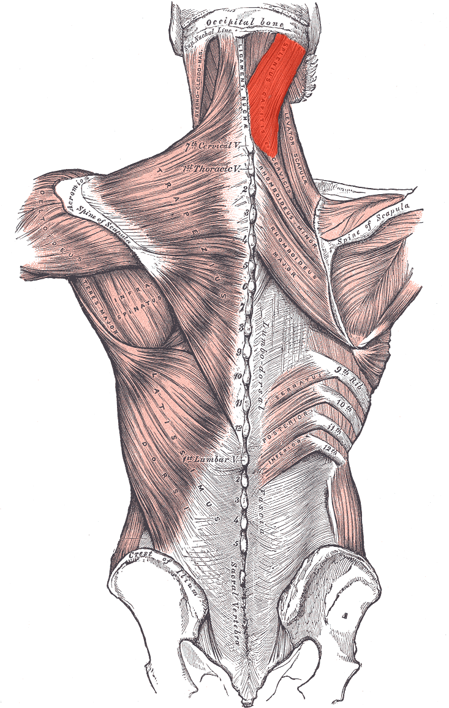
Fej es nyak izomzata↗II. Nyaki extenzorok (Feszítők)
A fej szíjizma (m. splenius capitis) – tónusos:
EredésA tarkószalag (ligamentum nuchae) alsó része, valamint a 7. nyaki és az 1–3. háti csigolya tövisnyúlványa.
TapadásA halántékcsont csecsnyúlványa és a nyakszirtcsont tarkóvonala.
MozgásKétoldali működéskor hátrahajtja a fejet, egyoldali működéskor pedig azonos oldalra hajlítja és fordítja azt.
 Fej es nyak izomzata↗
Fej es nyak izomzata↗II. Nyaki extenzorok (Feszítők)
A nyak szíjizma (m. splenius cervicis / colli) – tónusos:
EredésA 3–6. háti csigolya tövisnyúlványai.
TapadásAz 1–3. nyakcsigolya harántnyúlványai.
MozgásKétoldali működéskor hátrahajtja a nyakat, egyoldali működéskor pedig azonos oldalra hajlítja és forgatja a nyaki gerincet.
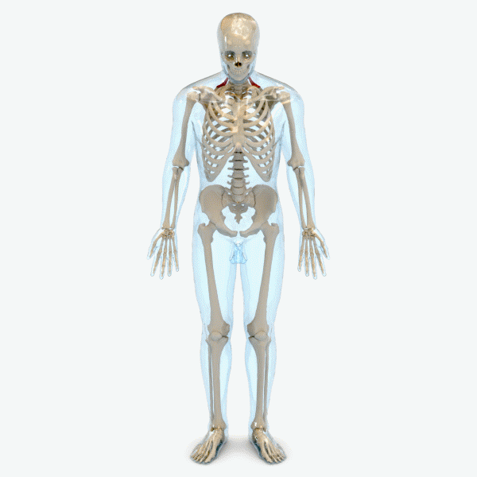
Fej es nyak izomzata↗II. Nyaki extenzorok (Feszítők)
Lapockaemelő izom (m. levator scapulae) – tónusos:
EredésAz 1–4. nyakcsigolya harántnyúlványai.
TapadásA lapocka felső szöglete (angulus superior scapulae).
MozgásRögzített nyak mellett emeli és befelé forgatja a lapockát, rögzített lapocka mellett pedig azonos oldalra hajlítja és hátrafeszíti a nyakat.
 Fej es nyak izomzata↗
Fej es nyak izomzata↗II. Nyaki extenzorok (Feszítők)
Csuklyásizom felső része (m. trapezius – pars descendens) – tónusos (megjegyzés: a középső és alsó része fázisos):
EredésA nyakszirtcsont külső dudora, a tarkószalag és a 7. nyakcsigolya tövisnyúlványa.
TapadásA kulcscsont vállcsúcsi (laterális) harmada.
MozgásEmeli a vállövet, rögzített váll mellett pedig hátrahajtja, azonos oldalra biccenti és ellenkező oldalra fordítja a fejet.
2. Tarkó alatti (Suboccipitális) mély izomzat – mindegyik tónusos
A koponya és az első két nyakcsigolya közötti finom, precíz mozgásokért és a fej finomhangolt egyensúlyáért felelnek.
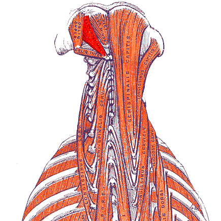
Fej es nyak izomzata↗II. Nyaki extenzorok (Feszítők)
Nagy hátsó egyenes fejizom (m. rectus capitis posterior major) – tónusos:
Eredés / TapadásA 2. nyakcsigolya (axis) tövisnyúlványáról ered, és a nyakszirtcsont alsó tarkóvonalán tapad.
MozgásHátrahajtja és azonos oldalra forgatja a fejet.
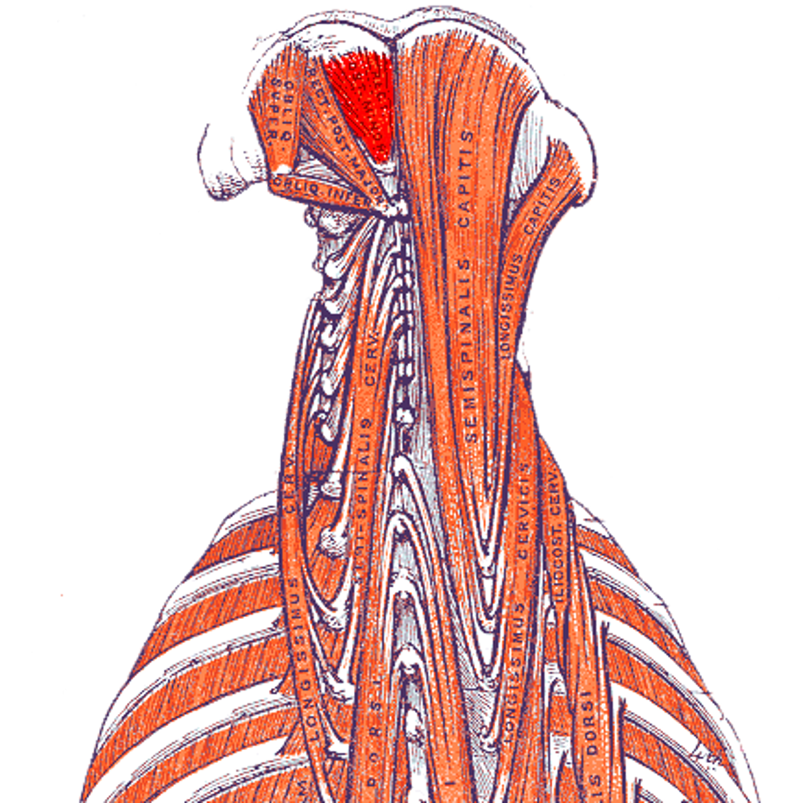
Fej es nyak izomzata↗II. Nyaki extenzorok (Feszítők)
Kis hátsó egyenes fejizom (m. rectus capitis posterior minor) – tónusos:
Eredés / TapadásAz 1. nyakcsigolya (atlasz) hátsó gumójáról ered, és a nyakszirtcsont alsó tarkóvonalán tapad.
MozgásHátrabillenti (extenzió) a fejet az első nyakcsigolyán.
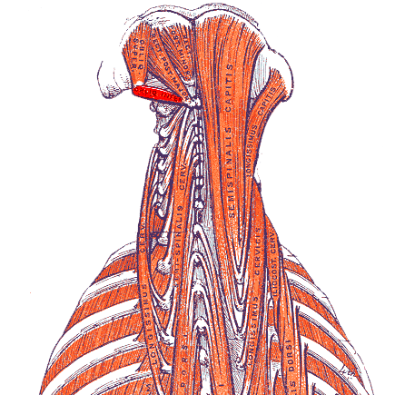
Fej es nyak izomzata↗II. Nyaki extenzorok (Feszítők)
Alsó ferde fejizom (m. obliquus capitis inferior) – tónusos:
Eredés / TapadásA 2. nyakcsigolya (axis) tövisnyúlványáról ered, és az 1. nyakcsigolya (atlasz) harántnyúlványán tapad.
MozgásAzonos oldalra forgatja az első nyakcsigolyát és vele együtt a fejet.
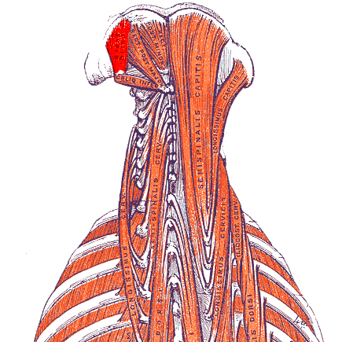
Fej es nyak izomzata↗II. Nyaki extenzorok (Feszítők)
Felső ferde fejizom (m. obliquus capitis superior) – tónusos:
Eredés / TapadásAz 1. nyakcsigolya (atlasz) harántnyúlványáról ered, és a nyakszirtcsonton tapad.
MozgásHátrahajtja és enyhén azonos oldalra biccenti a fejet.
TESTTÁJÉK
A hát izomzata
5 adatlap
 A hát izomzata↗
A hát izomzata↗I. Mély hátizmok (A gerincfeszítő rendszer – m. erector spinae részei)
Tövisizom (m. spinalis thoracis) – tónusos
EredésAz alsó háti és a felső ágyéki csigolyák tövisnyúlványai (Th11–L2).
TapadásA felső és középső háti csigolyák tövisnyúlványai (Th2–Th8).
MozgásKétoldali működéskor hátrahajtja (extenzió), egyoldali működéskor pedig azonos oldalra hajlítja a háti gerincszakaszt.
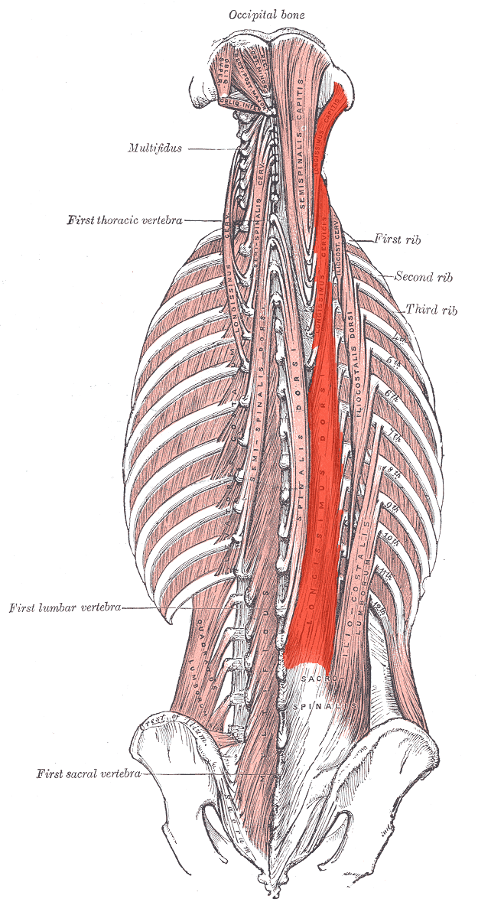
A hát izomzata↗I. Mély hátizmok (A gerincfeszítő rendszer – m. erector spinae részei)
Hosszú hátizom (m. longissimus thoracis) – tónusos
EredésA keresztcsont hátsó felszíne, az ágyéki csigolyák tövisnyúlványai és az alsó háti csigolyák harántnyúlványai.
TapadásA háti csigolyák harántnyúlványai és az alsó 9–10 borda.
MozgásKétoldali működéskor egyenesen tartja és hátrahajtja a gerincet, egyoldali működéskor pedig azonos oldalra hajlítja a törzset.
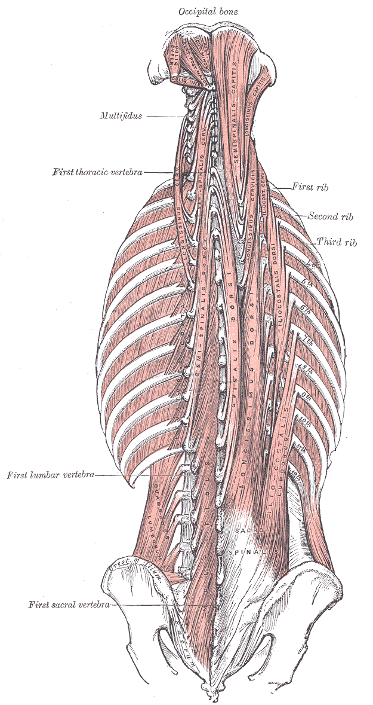
A hát izomzata↗I. Mély hátizmok (A gerincfeszítő rendszer – m. erector spinae részei)
Csípőbordai izom (m. iliocostalis – lumborum, thoracis, cervicis) – tónusos
Egymás folytatásaként a medencétől egészen a nyakig húzódó izomláncot alkotnak.
EredésA keresztcsont, a csípőtaréj hátsó része, valamint a bordák szögletei (angulus costae).
TapadásA bordák szögletei (felfelé haladva), illetve a nyaki szakaszon a 4–6. nyakcsigolya harántnyúlványai.
MozgásKétoldali működéskor hátrahajtja a gerincet, egyoldali működéskor pedig azonos oldalra hajlítja (laterálflexió) és enyhén elfordítja a törzset és a nyakat.
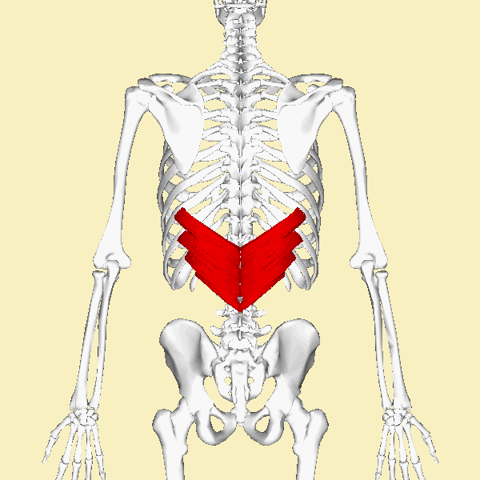
A hát izomzata↗II. Középső és felületes hátizmok
Hátulsó alsó fűrészizom (m. serratus posterior inferior) – fázisos / légzési segédizom
A középső réteg egyetlen izma, amely a mély és a felületes hátizmok között helyezkedik el.
EredésAz utolsó két háti és az első két ágyéki csigolya tövisnyúlványa (Th11–L2).
TapadásAz alsó négy borda (9–12. borda) alsó éle.
MozgásLefelé húzza az alsó bordákat, amivel segíti az erőltetett kilégzést, valamint stabilizálja a bordakosarat a rekeszizom munkájához.
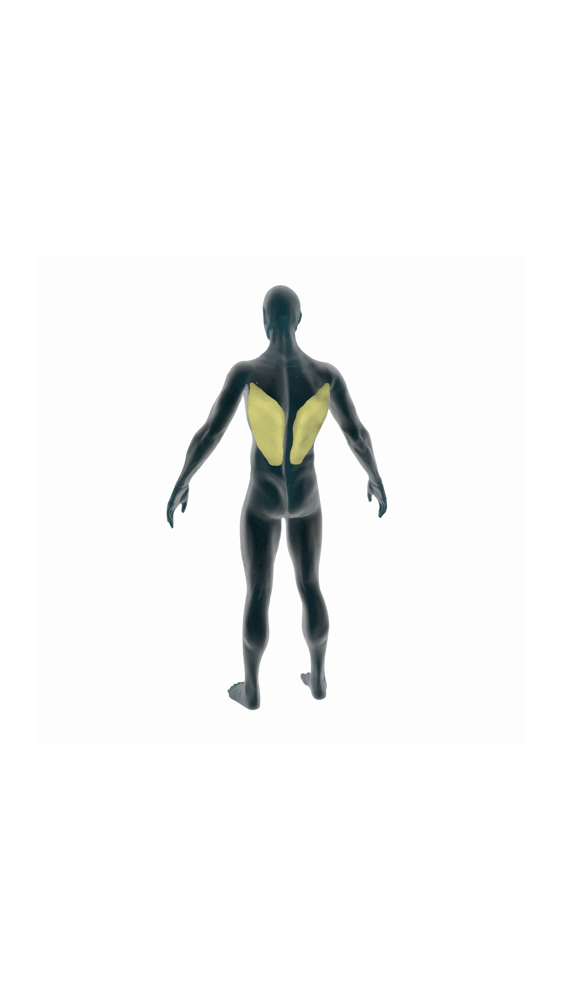
A hát izomzata↗II. Középső és felületes hátizmok
Széles hátizom (m. latissimus dorsi) – tónusos
A hát felszínes rétegét alkotó nagy kiterjedésű izom.
EredésAz alsó hat háti csigolya (Th7–Th12), az összes ágyéki csigolya és a keresztcsont tövisnyúlványai, a csípőtaréj, valamint az alsó 3–4 borda.
TapadásA karcsont kis gumójának taraja (crista tuberculi minoris humeri).
MozgásHátrahúzza (retroverzió), a törzshöz közelíti (addukció) és befelé forgatja a felkart, rögzített kar mellett pedig emeli a törzset (például húzódzkodáskor).
TESTTÁJÉK
Hasfal szerkezete
5 adatlapA négy hasizom három rétegben, egymást keresztező rostlefutással alkotja a hasfalat, és együttes működésükkel (a rekeszizommal együtt) létrehozzák a törzset stabilizáló és a zsigeri működéseket segítő hasprést.
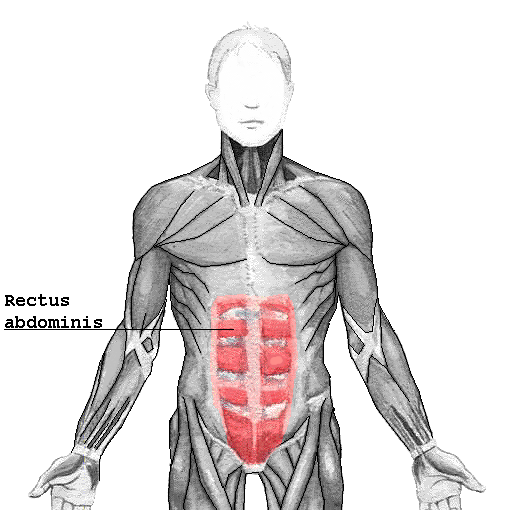
Hasfal szerkezete↗I. Elülső és oldalsó hasizmok
Egyenes hasizom (m. rectus abdominis) – fázisos
A középvonal mellett, a fehér vonal – linea alba – két oldalán függőlegesen futó páros izom.
EredésAz 5–7. borda porcos része és a szegycsont kardnyúlványa (processus xiphoideus).
TapadásA szeméremcsont felső ága és a szeméremízület (symphysis pubica).
MozgásKétoldali működéskor előrehajlítja (flexió) a törzset, lefelé húzza a bordakosarat és hátrabilenti a medencét.
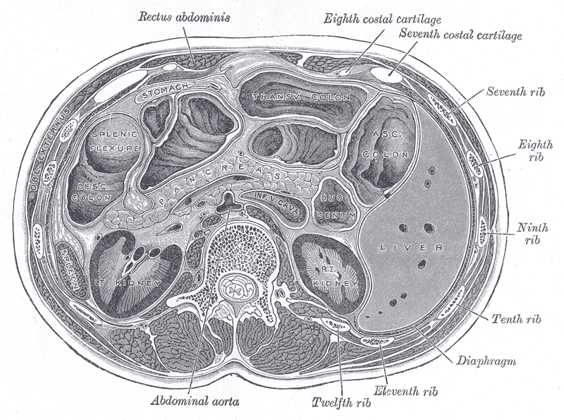
Hasfal szerkezete↗I. Elülső és oldalsó hasizmok
Külső ferde hasizom (m. obliquus externus abdominis) – fázisos
A legfelületesebb oldalsó hasizom, amelynek rostjai hátulról előre és lefelé – "zsebre dugott kéz" irányban – futnak.
EredésAz alsó nyolc borda (5–12. borda) külső felszíne.
TapadásA csípőtaréj elülső része, a lágyékszalag, a szeméremízület és a fehér vonal (linea alba).
MozgásKétoldali működéskor előrehajlítja a törzset, egyoldali működéskor pedig azonos oldalra hajlítja és az ellenkező oldalra fordítja azt.
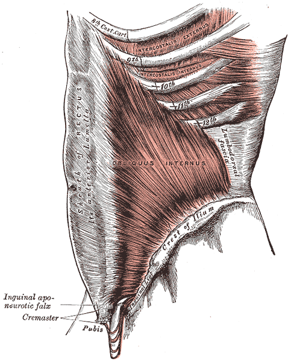
Hasfal szerkezete↗I. Elülső és oldalsó hasizmok
Belső ferde hasizom (m. obliquus internus abdominis) – fázisos
A középső réteget alkotó izom, amelynek rostjai a külső ferde hasizomra merőlegesen, alulról felfelé és előre legyezőszerűen futnak.
EredésAz ágyéki pólya (fascia thoracolumbalis), a csípőtaréj és a lágyékszalag.
TapadásAz alsó három borda (10–12. borda) alsó széle, a fehér vonal (linea alba) és a szeméremcsont.
MozgásKétoldali működéskor előrehajlítja a törzset, egyoldali működéskor pedig azonos oldalra hajlítja és azonos oldalra fordítja azt, miközben stabilizálja a medencét.
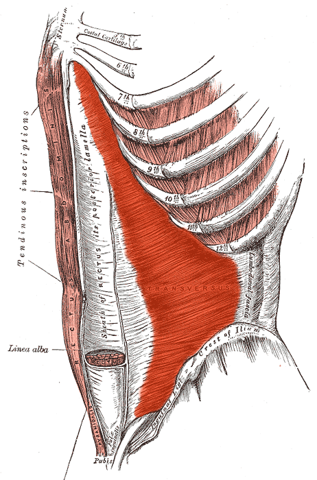
Hasfal szerkezete↗I. Elülső és oldalsó hasizmok
Haránt hasizom (m. transversus abdominis) – fázisos (mély stabilizáló)
A hasizmok legmélyebb rétege, amelynek vízszintes rostjai fűzőként ölelik körbe a derekat.
EredésAz alsó hat borda (7–12. borda) belső porcos felszíne, az ágyéki pólya (fascia thoracolumbalis), a csípőtaréj és a lágyékszalag.
TapadásA fehér vonal (linea alba) és a szeméremízület.
MozgásNem hoz létre gerincmozgást, hanem a hasüregi nyomás fokozásával fűzőként összehúzza a hasfalat, és védi, stabilizálja az ágyéki gerincet.
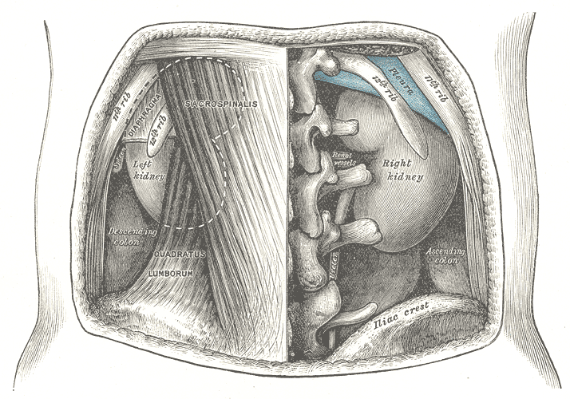
Hasfal szerkezete↗II. Hátsó hasfal izma
Négyszögletes ágyéki izom (m. quadratus lumborum) – tónusos
A hátsó hasfalat alkotó mély izom, amely az ellenoldali középső farizom segítőjeként járáskor megakadályozza a lengő láb oldali medencefél lesüllyedését.
EredésA csípőtaréj hátsó része és a csípő-ágyéki szalag (ligamentum iliolumbale).
TapadásA 12. borda alsó széle és az 1–4. ágyéki csigolya harántnyúlványai.
MozgásEgyoldali működéskor azonos oldalra hajlítja (laterálflexió) a törzset és emeli a medencét, kétoldali működéskor pedig rögzíti az ágyéki gerincet és segíti a kilégzést.
TESTTÁJÉK
Csipo izmai
7 adatlap
 Csipo izmai↗
Csipo izmai↗I. Belső csípőizmok (Csípőhorpasz – m. iliopsoas)
Horpaszizom (m. psoas major et minor) – tónusos
A kis és nagy horpaszizomból álló erős csípőhajlító izom.
EredésA 12. háti és az 1–5. ágyéki csigolya teste és harántnyúlványai (Th12–L5).
TapadásA combcsont kistompora (trochanter minor femoris), a csípőizommal egyesülve.
MozgásRögzített felsőtest mellett hajlítja a csípőt és emeli a combot, rögzített lábaknál előrebillenti a törzset, egyoldali működéskor pedig oldalra hajlítja az ágyéki gerincet.
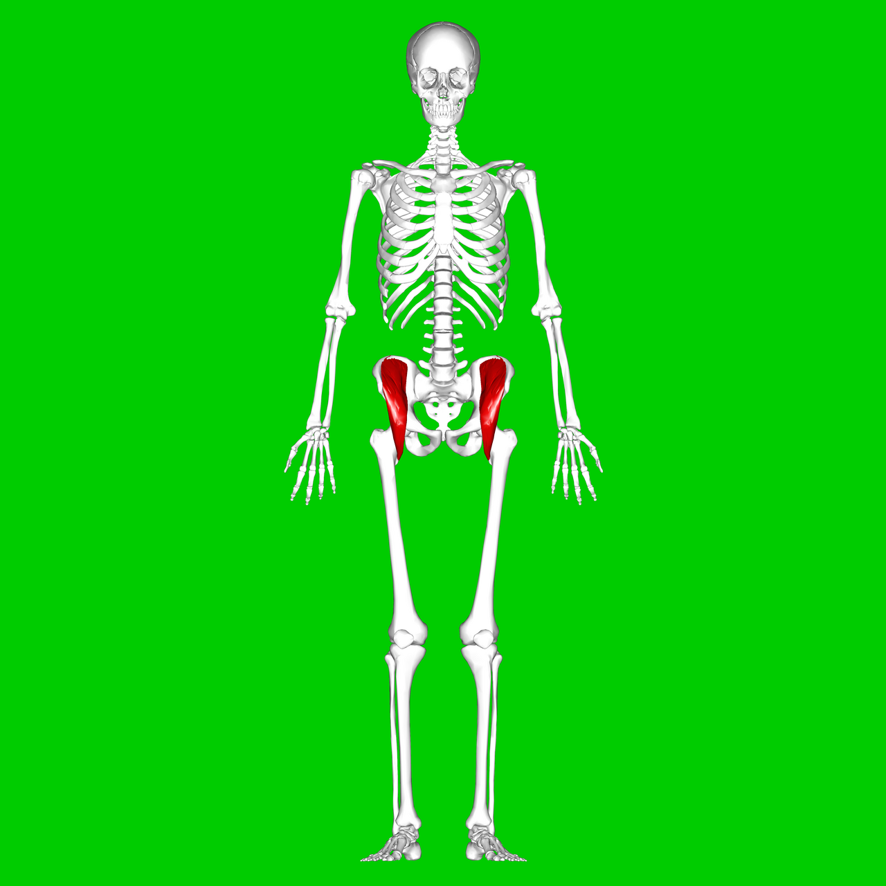
Csipo izmai↗I. Belső csípőizmok (Csípőhorpasz – m. iliopsoas)
Csípőizom (m. iliacus) – tónusos
A horpaszizommal közös ínban egyesülő, legyezőszerű belső csípőizom.
EredésA csípőlapát belső felszíne (fossa iliaca).
TapadásA combcsont kistompora (trochanter minor femoris).
MozgásRögzített felsőtest mellett hajlítja (flexió) a csípőt és emeli a combot, rögzített alsó végtagnál pedig előrebillenti a medencét és a törzset.
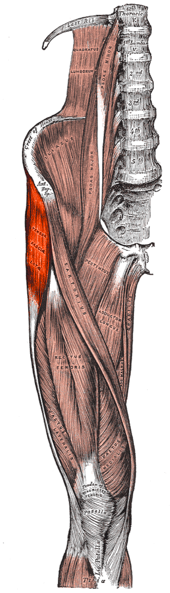
Csipo izmai↗II. Külső csípőizmok
Széles combpólya feszítő izom (m. tensor fasciae latae) – tónusos
EredésA csípőtaréj elülső-felső tövise (spina iliaca anterior superior).
TapadásA combpólya megerősödött kötegén (tractus iliotibialis) keresztül a sípcsont külső bütykén.
MozgásTávolítja (abdukció), hajlítja (flexió) és befelé forgatja (berotáció) a combot a csípőízületben, valamint oldalról stabilizálja a térdet.
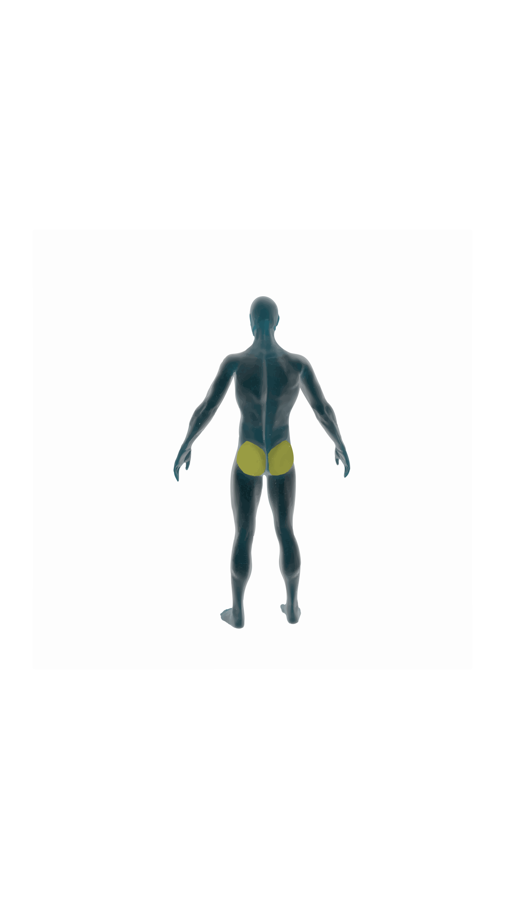
Csipo izmai↗II. Külső csípőizmok
Nagy farizom (m. gluteus maximus) – fázisos
EredésA csípőlapát külső hátsó felszíne, a keresztcsont és a farkcsont hátsó felszíne, valamint az ülőgumó-keresztcsonti szalag (ligamentum sacrotuberale).
TapadásA combcsont farizmi érdessége (tuberositas glutea) és a széles combpólya (tractus iliotibialis).
MozgásErőteljesen hátrafeszíti (extenzió) és kifelé forgatja (kirotáció) a combot, emellett részt vesz a csípő távolításában és a törzs felegyenesítésében.
 Csipo izmai↗
Csipo izmai↗II. Külső csípőizmok
Középső és kis farizom (m. gluteus medius et minimus) – fázisos
Különösen a hátulsó rostjaik hajlamosak a gyengülésre; járáskor megakadályozzák az ellenoldali medencefél lesüllyedését.
EredésA csípőlapát külső oldalsó felszíne.
TapadásA combcsont nagytompora (trochanter major femoris – a középső hátul-oldalt, a kis farizom elöl).
MozgásÖsszességében távolítják (abdukció) a combot és stabilizálják a medencét egy lábon álláskor, míg elülső rostjaik hajlítják és befelé, hátulsó rostjaik pedig feszítik és kifelé forgatják a csípőt.
 Csipo izmai↗
Csipo izmai↗II. Külső csípőizmok
Körteképű izom (m. piriformis) – tónusos
EredésA keresztcsont elülső (belső) felszíne.
TapadásA combcsont nagytomporának felső csúcsa (trochanter major femoris).
MozgásKifelé forgatja (kirotáció) a kinyújtott combot, hajlított csípőnél pedig segíti annak távolítását.
 Csipo izmai↗
Csipo izmai↗II. Külső csípőizmok
Négyszögű combizom (m. quadratus femoris) – tónusos
EredésAz ülőcsont ülőgumója (tuber ischiadicum).
TapadásA combcsont tomporok közötti taraja (crista intertrochanterica) a nagytompor hátoldalán.
MozgásErőteljesen kifelé forgatja (kirotáció) a combot a csípőízületben.
TESTTÁJÉK
Comb izmai
10 adatlap
I. Elülső combizmok (Feszítők)
Négyfejű combizom (m. quadriceps femoris) – vegyes (lásd fejenként)
Négy fejből álló erős térdfeszítő izom, amely közös ínnal a térdkalácsot körülvéve a sípcsont érdességén tapad.
 Comb izmai↗
Comb izmai↗I. Elülső combizmok (Feszítők)
Egyenes combizom (m. rectus femoris) – tónusos:
EredésA csípőcsont elülső-alsó tövise (spina iliaca anterior inferior).
TapadásA térdkalácson (patella) keresztül a sípcsont érdességén (tuberositas tibiae).
MozgásKét ízületet áthidalva egyszerre feszíti a térdet (extenzió) és hajlítja a csípőt (flexió).
 Comb izmai↗
Comb izmai↗I. Elülső combizmok (Feszítők)
Belső, külső és középső vaskosizom (m. vastus medialis, lateralis, intermedius) – fázisosak (különösen a medialis hajlamos a gyengülésre):
EredésA combcsont elülső, oldalsó és hátulsó felszíne (linea aspera és a combcsont teste).
TapadásA közös négyfejű ínnal a térdkalácson át a sípcsont érdességén (tuberositas tibiae).
MozgásEgyedüli feladatuk a térdízület erőteljes kinyújtása (extenzió) és a térdkalács stabilizálása.
 Comb izmai↗
Comb izmai↗I. Elülső combizmok (Feszítők)
Szabóizom (m. sartorius) – tónusos
A test leghosszabb, ferdén lefutó szalagszerű izma.
EredésA csípőtaréj elülső-felső tövise (spina iliaca anterior superior).
TapadásA sípcsont belső bütyke alatt, a úgynevezett "lúdláb" (pes anserinus) területén.
MozgásHajlítja, távolítja és kifelé forgatja a csípőt, miközben hajlítja és befelé forgatja a térdet (törökülés-pozíció).
II. Hátulsó combizmok (Hajlítók – Hamstring izomcsoport)
Kétfejű combizom (m. biceps femoris) – tónusos
EredésHosszú feje az ülőgumón (tuber ischiadicum), rövid feje a combcsont hátulsó taraján (linea aspera).
TapadásA szárkapocscsont fejecskéjén (caput fibulae).
MozgásHajlítja a térdet, kifelé forgatja a hajlított lábszárat, hosszú feje pedig hátrafeszíti (extenzió) a csípőt.
II. Hátulsó combizmok (Hajlítók – Hamstring izomcsoport)
Féliginas izom (m. semitendinosus) – tónusos
EredésAz ülőcsont ülőgumója (tuber ischiadicum).
TapadásA sípcsont belső bütyke alatt (pes anserinus).
MozgásHátrafeszíti a csípőt, hajlítja a térdet és befelé forgatja a hajlított lábszárat.
 Comb izmai↗
Comb izmai↗II. Hátulsó combizmok (Hajlítók – Hamstring izomcsoport)
Félighártyás izom (m. semimembranosus) – tónusos
EredésAz ülőcsont ülőgumója (tuber ischiadicum).
TapadásA sípcsont belső bütykének hátulsó felszíne.
MozgásHátrafeszíti a csípőt, hajlítja a térdet és befelé forgatja a hajlított lábszárat.
III. Belső combizmok (Közelítők – Adduktorok)
Hosszú, rövid és nagy combközelítő izom (m. adductor longus, brevis, magnus) – tónusosak
EredésA szeméremcsont szárai és az ülőgumó.
TapadásA combcsont hátulsó érdes vonala (linea aspera), a nagy combközelítő esetében a combcsont belső bütyke feletti dudor is.
MozgásKözelítik (addukció) a combot a középvonalhoz, emellett részt vesznek a csípő hajlításában, feszítésében és forgatásában.
III. Belső combizmok (Közelítők – Adduktorok)
Fésűizom (m. pectineus) – tónusos
EredésA szeméremcsont felső ágának fésűszerű taraja (pecten ossis pubis).
TapadásA combcsont hátulsó felszínén, a kistompor alatt (linea pectinea).
MozgásKözelíti (addukció), hajlítja (flexió) és enyhén kifelé forgatja a combot a csípőízületben.
 Comb izmai↗
Comb izmai↗III. Belső combizmok (Közelítők – Adduktorok)
Karcsúizom (m. gracilis) – tónusos
A comb belső oldalán függőlegesen végigfutó, két ízületet áthidaló lapos izom.
EredésA szeméremcsont alsó ága, a szeméremízület mellett.
TapadásA sípcsont belső bütyke alatt (pes anserinus).
MozgásKözelíti a combot a csípőízületben, valamint hajlítja és befelé forgatja a lábszárat a térdízületben.
TESTTÁJÉK
Lábszár izmai
12 adatlap
 Lábszár izmai↗
Lábszár izmai↗I. Hátulsó lábszárizmok (Flexorok – Hajlítók)
Felületes flexorok: Háromfejű lábikraizom (m. triceps surae)
Közös Achilles-ínnal a sarokcsont gumóján – tuber calcanei – tapadó vádliizomzat.
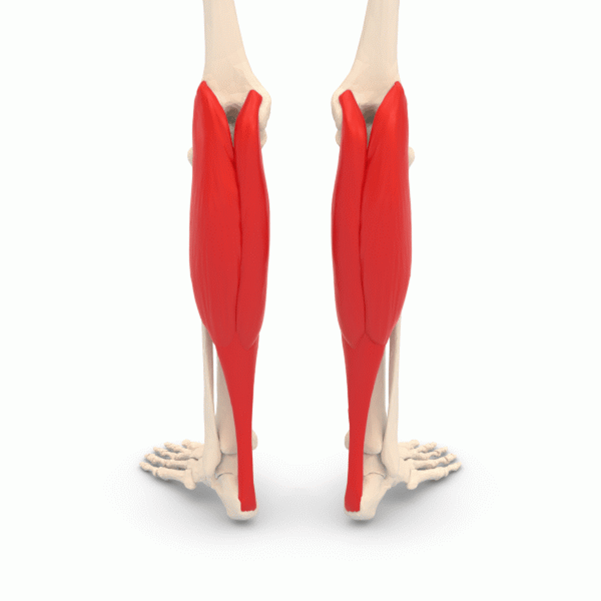
Lábszár izmai↗I. Hátulsó lábszárizmok (Flexorok – Hajlítók)
Kétfejű lábikraizom (m. gastrocnemius) – tónusos:
EredésA combcsont belső és külső bütyke (epicondylus medialis et lateralis femoris).
TapadásAz Achilles-ínon (tendo calcaneus) keresztül a sarokcsont gumója.
MozgásKét ízületet áthidalva lefeszíti a lábfejet (plantarflexió), emellett hajlítja és enyhén kifelé forgatja a térdet.
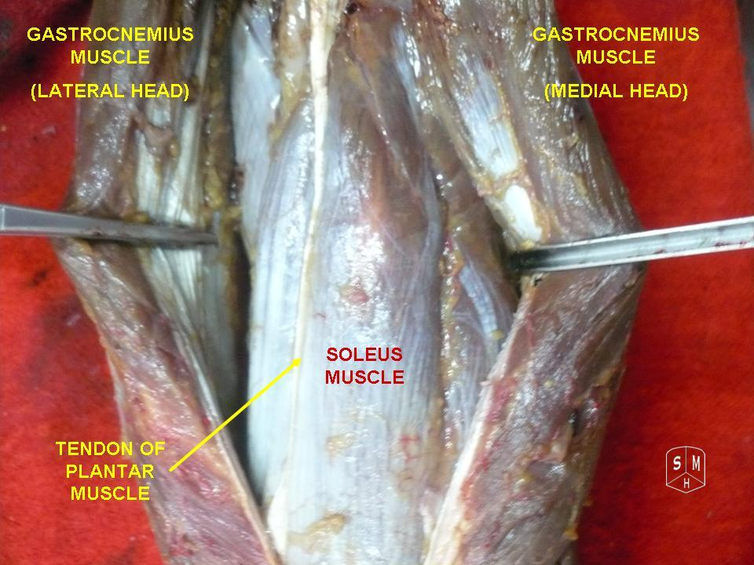
Lábszár izmai↗I. Hátulsó lábszárizmok (Flexorok – Hajlítók)
Gázlóizom (m. soleus) – tónusos:
EredésA sípcsont és a szárkapocscsont hátulsó felszíne.
TapadásAz Achilles-ínon keresztül a sarokcsont gumója.
MozgásKizárólag a bokaízületre hatva erőteljesen lefeszíti a lábfejet (plantarflexió) és stabilizálja a lábszárat állás közben.
2. Mély flexorok
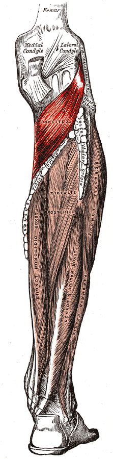
Lábszár izmai↗I. Hátulsó lábszárizmok (Flexorok – Hajlítók)
Térdárki izom (m. popliteus) – tónusos:
EredésA combcsont külső bütyke és a térdízületi tok.
TapadásA sípcsont hátulsó felszínének felső része.
MozgásMegindítja a nyújtott térd hajlítását (berotálja a lábszárat), és hátrahúzza a külső ízületi porcot (meniscust), védve azt a becsípődéstől.
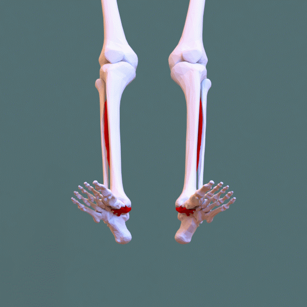
Lábszár izmai↗I. Hátulsó lábszárizmok (Flexorok – Hajlítók)
Hátsó sípcsonti izom (m. tibialis posterior) – tónusos (gyakran gyengülésre is hajlamos, de tónusosan feszül be):
EredésA sípcsont, a szárkapocscsont és a köztük lévő csontközötti hártya hátulsó felszíne.
TapadásA sajkacsont és az ékcsontok talpi felszíne (belboka mögött fut le).
MozgásLefeszíti (plantarflexió) és befelé fordítja (inverzió/szupináció) a lábfejet, miközben aktívan tartja a hosszanti lábboltozatot.
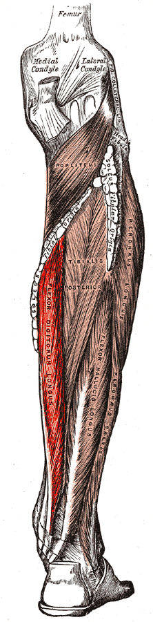
Lábszár izmai↗I. Hátulsó lábszárizmok (Flexorok – Hajlítók)
Hosszú ujjhajlító izom (m. flexor digitorum longus) – tónusos:
EredésA sípcsont hátulsó felszíne.
TapadásA 2–5. lábujj körömperceinek talpi alapja.
MozgásBehajlítja a 2–5. lábujjat, és segíti a lábfej lefeszítését (plantarflexió) és befelé fordítását.
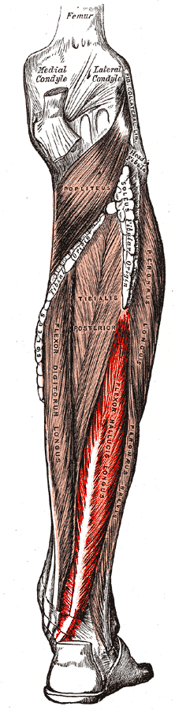
Lábszár izmai↗I. Hátulsó lábszárizmok (Flexorok – Hajlítók)
Hosszú öregujjhajlító izom (m. flexor hallucis longus) – tónusos:
EredésA szárkapocscsont hátulsó felszínének alsó kétharmada.
TapadásAz öregujj (nagylábujj) körömpercének talpi alapja.
MozgásBehajlítja az öregujjat (különösen elrugaszkodáskor), valamint segíti a lábfej lefeszítését és a lábboltozat megtartását.
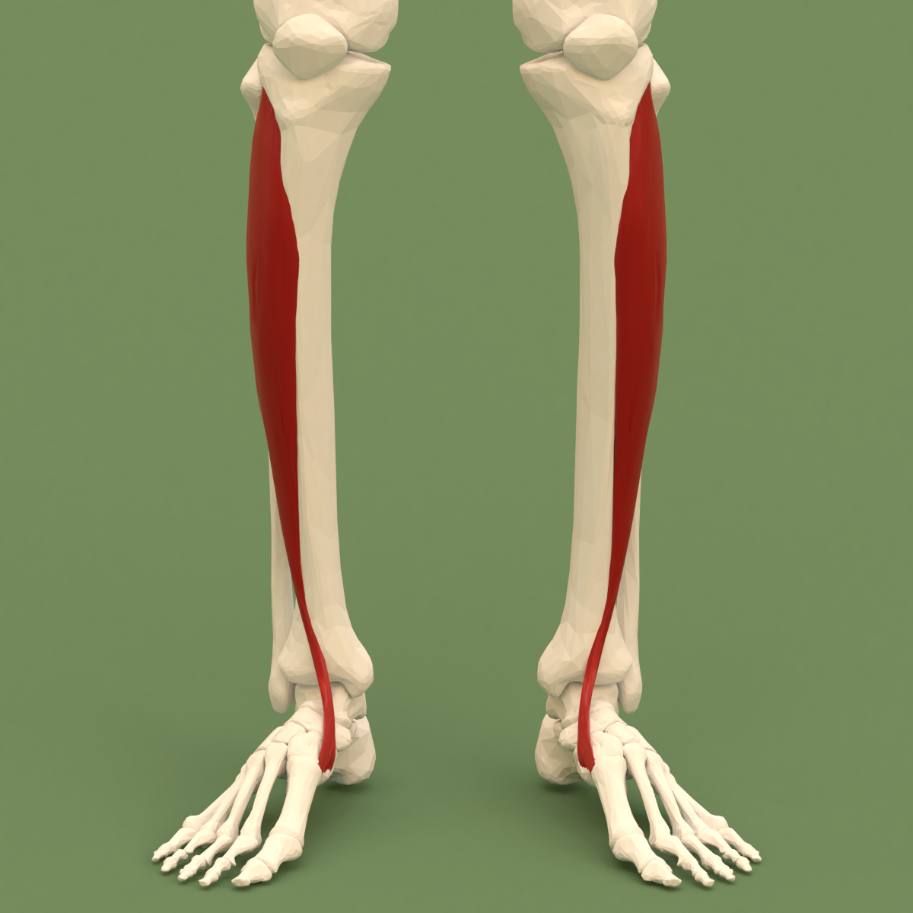
Lábszár izmai↗II. Elülső lábszárizmok (Extenzorok – Feszítők)
Elülső sípcsonti izom (m. tibialis anterior) – fázisos
EredésA sípcsont külső bütyke és oldalsó felszíne, valamint a csontközötti hártya.
TapadásA belső ékcsont és az első lábközépcsont alapja.
MozgásFelfelé húzza (dorsalflexió) és befelé fordítja (szupináció/inverzió) a lábfejet, miközben emeli a belső lábboltozatot.
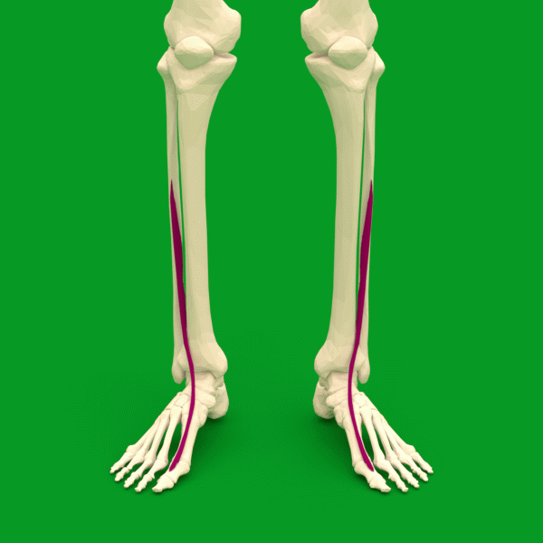
Lábszár izmai↗II. Elülső lábszárizmok (Extenzorok – Feszítők)
Hosszú öregujjfeszítő izom (m. extensor hallucis longus) – fázisos
EredésA szárkapocscsont elülső felszínének középső része és a csontközötti hártya.
TapadásAz öregujj körömpercének háti alapja.
MozgásFelfelé feszíti (extenzió) az öregujjat, és segíti a lábfej felfelé húzását (dorsalflexió).
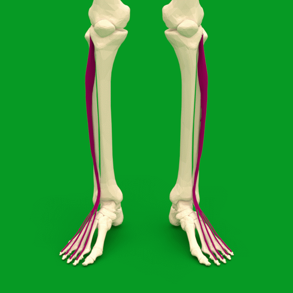
Lábszár izmai↗II. Elülső lábszárizmok (Extenzorok – Feszítők)
Hosszú ujjfeszítő izom (m. extensor digitorum longus) – fázisos
EredésA sípcsont külső bütyke és a szárkapocscsont elülső felszíne.
TapadásA 2–5. lábujj közép- és körömperceinek háti felszíne.
MozgásFelfelé feszíti a 2–5. lábujjat, valamint segíti a lábfej felfelé húzását (dorsalflexió) és kifelé fordítását (pronáció).
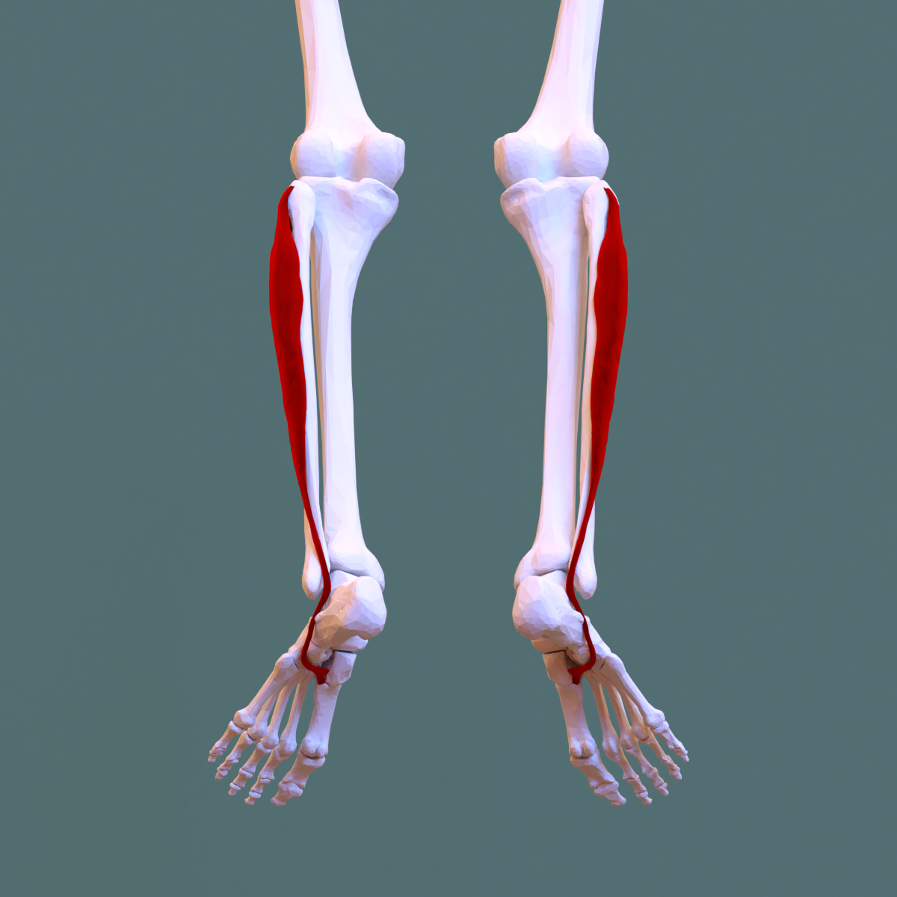
Lábszár izmai↗III. Oldalsó lábszárizmok (Szárkapcsi izmok – Peroneusok / Fibularisok)
Hosszú szárkapcsi izom (m. peroneus / fibularis longus) – fázisos
EredésA szárkapocscsont fejecskéje és felső kétharmada.
TapadásA külboka mögött és a talp alatt átfutva a belső ékcsonton és az első lábközépcsont alapján.
MozgásKifelé fordítja (pronáció/everzió) és lefeszíti (plantarflexió) a lábfejet, miközben feszíti a haránt lábboltozatot.
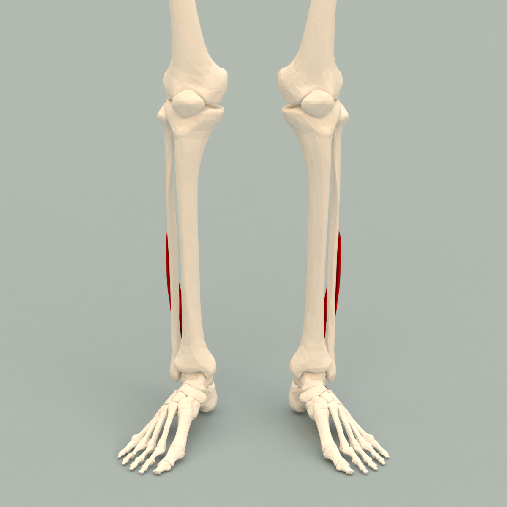
Lábszár izmai↗III. Oldalsó lábszárizmok (Szárkapcsi izmok – Peroneusok / Fibularisok)
Rövid szárkapcsi izom (m. peroneus / fibularis brevis) – fázisos
EredésA szárkapocscsont külső felszínének alsó kétharmada.
TapadásA külboka mögött elhaladva az 5. lábközépcsont alapjának dudorán.
MozgásKifelé fordítja (pronáció/everzió) és enyhén lefeszíti a lábfejet, oldalról stabilizálva a bokaízületet.
TESTTÁJÉK
Boka izmai
12 adatlapA sípcsont és a szárkapocscsont elülső élei között fekszenek, és mindhárom izom felfelé hajlítja a lábat a bokaízületben.
A külső lábszélt emelő izomcsoport, amelyek inai a külboka mögött megkerülve futnak a talpra.
Boka izmai↗
I. Hátulsó csoport (Flexorok – Talphajlítók)
Felületes flexor: Háromfejű lábikraizom (m. triceps surae)
A legerősebb talphajlító izom, amely közös Achilles-ínnal a sarokcsont gumóján tapad.
I. Hátulsó csoport (Flexorok – Talphajlítók)
Kétfejű lábikraizom (m. gastrocnemius) – inkább fázisos (a talajtól való elrugaszkodásnál dolgozik; kétízületi jellege miatt hajlamos a rövidülésre is):
EredésA combcsont belső és külső bütyke (epicondylus medialis et lateralis femoris).
TapadásAz Achilles-ínon (tendo calcaneus) keresztül a sarokcsont gumója.
MozgásNyújtott térd mellett a legerősebben hajlítja lefelé a talpat (plantarflexió), és segíti az elrugaszkodást.
I. Hátulsó csoport (Flexorok – Talphajlítók)
Gázlóizom (m. soleus) – tónusos (térdtől független tartóizom, például ülésből való felálláskor érvényesül):
EredésA sípcsont és a szárkapocscsont hátulsó felszíne.
TapadásAz Achilles-ínon keresztül a sarokcsont gumója.
MozgásA térd helyzetétől függetlenül lefelé hajlítja a talpat (plantarflexió), és álláskor stabilizálja a bokát.
2. Mély flexorok
I. Hátulsó csoport (Flexorok – Talphajlítók)
(A térdárki izom – m. popliteus – a bokára nincs hatással, csak a térdre.)
A jegyzet ezt az izomcsoportot megnevezi, de külön eredést, tapadást vagy mozgást nem részletez.
I. Hátulsó csoport (Flexorok – Talphajlítók)
Hátsó sípcsonti izom (m. tibialis posterior) – tónusos:
EredésA sípcsont, a szárkapocscsont és a csontközötti hártya hátulsó felszíne.
TapadásA sajkacsont és az ékcsontok talpi felszíne (a belboka mögött futva).
MozgásLefelé mozgatja a lábat a bokaízületben (plantarflexió), valamint kismértékben befelé forgatja azt (szupináció / inverzió).
I. Hátulsó csoport (Flexorok – Talphajlítók)
Hosszú ujjhajlító izom (m. flexor digitorum longus) – tónusos:
EredésA sípcsont hátulsó felszíne.
TapadásA 2–5. lábujj körömperceinek talpi alapja.
MozgásLefelé hajlítja a talpat és a 2–5. lábujjat (plantarflexió), valamint enyhén befelé forgatja a talpat (szupináció / inverzió).
I. Hátulsó csoport (Flexorok – Talphajlítók)
Hosszú öregujjhajlító izom (m. flexor hallucis longus) – tónusos:
EredésA szárkapocscsont hátulsó felszínének alsó kétharmada.
TapadásAz öregujj (nagylábujj) körömpercének talpi alapja.
MozgásBehajlítja az öregujjat (plantarflexió), emellett lefelé mozgatja és enyhén befelé forgatja a lábfejet.
II. Elülső csoport (Extenzorok – Lábháti feszítők)
Elülső sípcsonti izom (m. tibialis anterior) – fázisos
EredésA sípcsont külső bütyke, oldalsó felszíne és a csontközötti hártya.
TapadásA belső ékcsont és az első lábközépcsont alapja.
MozgásFelfelé hajlítja (dorsalflexió) és befelé forgatja (inverzió / szupináció) a lábat, miközben fenntartja a haránt és a belső hosszanti lábboltozatot.
II. Elülső csoport (Extenzorok – Lábháti feszítők)
Hosszú öregujjfeszítő izom (m. extensor hallucis longus) – fázisos
EredésA szárkapocscsont elülső felszínének középső része és a csontközötti hártya.
TapadásAz öregujj körömpercének háti alapja.
MozgásFelfelé hajlítja a lábfejet a bokaízületben, valamint a lábfej felé húzza (dorsalflexió) az öregujjat.
II. Elülső csoport (Extenzorok – Lábháti feszítők)
Hosszú lábujjakat feszítő izom (m. extensor digitorum longus) – fázisos
EredésA sípcsont külső bütyke és a szárkapocscsont elülső felszíne.
TapadásA 2–5. lábujj közép- és körömperceinek háti felszíne.
MozgásFelfelé hajlítja a lábfejet a bokaízületben, és a lábfej felé feszíti (dorsalflexió) a 2–5. lábujjat.
III. Oldalsó csoport (Szárkapcsi izmok – Peroneusok / Fibularisok)
Hosszú szárkapcsi izom (m. fibularis / peroneus longus) – fázisos
EredésA szárkapocscsont fejecskéje és felső kétharmada.
TapadásA külboka mögött és a talp alatt keresztben futva a belső ékcsonton és az első lábközépcsont alapján.
MozgásLefelé süllyeszti a lábat a bokaízületben (plantarflexió), emeli a külső lábszélt az alsó ugróízületben (pronáció), és jelentős szerepe van a harántboltozat fenntartásában.
III. Oldalsó csoport (Szárkapcsi izmok – Peroneusok / Fibularisok)
Rövid szárkapcsi izom (m. fibularis / peroneus brevis) – fázisos
EredésA szárkapocscsont külső felszínének alsó kétharmada.
TapadásA külboka mögött elhaladva az 5. lábközépcsont alapjának dudorán.
MozgásLefelé süllyeszti a lábat (plantarflexió) és emeli a külső lábszélt (pronáció), stabilizálva a boka külső oldalát.
TESTTÁJÉK
a vállöv
8 adatlap
I. A vállöv elülső (anterior) izmai
Nagy mellizom (m. pectoralis major) – tónusos
EredésKulcscsonti feje a kulcscsont belső feléről, szegycsonti-bordai feje a szegycsont elülső felszínéről, a felső hat borda porcos részéről, valamint a külső ferde hasizom ináról.
TapadásA felkarcsont nagy gumójának taraja (crista tuberculi majoris humeri).
MozgásKözelíti (addukció) és befelé forgatja (berotáció) a felkart, felső rostjai emelik a kart, alsó rostjai pedig lefelé húzzák a magas tartásban lévő kart.
 a vállöv↗
a vállöv↗I. A vállöv elülső (anterior) izmai
Kis mellizom (m. pectoralis minor) – tónusos
A nagy mellizom alatt elhelyezkedő, rövidülésre erősen hajlamos izom.
EredésA 3–5. borda elülső, porcos részén.
TapadásA lapocka hollócsőrnyúlványa (processus coracoideus).
MozgásStabilizálja, valamint előre és lefelé húzza a lapockát a mellkasfalon, rögzített lapocka mellett pedig emeli a bordákat belégzéskor.
I. A vállöv elülső (anterior) izmai
Elülső fűrészizom (m. serratus anterior) – fázisos
A mellkasfalon fekvő, legyező alakú lapockastabilizáló izom.
EredésAz 1–9. borda külső felszínén, csipkézetten.
TapadásA lapocka belső (mediális) szélének elülső felszíne és alsó szöglete.
MozgásA mellkasfalhoz szorítja a lapockát, előrehúzza és felfelé forgatja azt (lehetővé téve a kar vízszintes fölé emelését), emellett légzési segédizomként is működik.
a vállöv↗
II. A vállöv hátulsó (posterior) izmai
Trapézizom / Csuklyásizom (m. trapezius) – vegyes (felső része tónusos, középső és alsó része fázisos)
EredésA nyakszirtcsont tarkóvonala, a tarkószalag, valamint a 7. nyaki és az összes háti csigolya tövisnyúlványa (C7–Th12).
TapadásA kulcscsont külső harmada, a vállcsúcs (acromion) és a lapockatövis (spina scapulae).
MozgásFelső része emeli a vállövet, középső része a gerinc felé közelíti a lapockát, alsó része pedig lefelé húzza és felfelé forgatja azt.
 a vállöv↗
a vállöv↗II. A vállöv hátulsó (posterior) izmai
Nagy rombuszizom (m. rhomboideus major) – fázisos
EredésA 2–5. háti csigolya tövisnyúlványai és szalagjai (Th2–Th5).
TapadásA lapocka belső (mediális) széle, a lapockatövis alatt.
MozgásA mellkasfalhoz szorítja, a gerinc felé közelíti (retrakció) és kissé felfelé húzza a lapockát.
 a vállöv↗
a vállöv↗II. A vállöv hátulsó (posterior) izmai
Kis rombuszizom (m. rhomboideus minor) – fázisos
EredésA 7. nyaki és az 1–2. háti csigolya tövisnyúlványai (C7–Th2).
TapadásA lapocka belső (mediális) széle, közvetlenül a lapockatövis magasságában.
MozgásA nagy rombuszizommal együttműködve a mellkasfalhoz rögzíti, a gerinc felé húzza és enyhén emeli a lapockát.
II. A vállöv hátulsó (posterior) izmai
Lapockaemelő izom (m. levator scapulae) – tónusos
EredésAz 1–4. nyakcsigolya harántnyúlványai (C1–C4).
TapadásA lapocka felső szöglete (angulus superior scapulae), a kis rombuszizom tapadása felett.
MozgásEmeli a lapockát és lefelé (befelé) billenti annak ízületi vápáját, rögzített váll mellett pedig oldalra hajlítja a nyakat.
II. A vállöv hátulsó (posterior) izmai
Széles hátizom (m. latissimus dorsi) – tónusos
EredésA 7–12. háti és az összes ágyéki csigolya tövisnyúlványa, a keresztcsont, az ágyéki pólya (fascia thoracolumbalis), a csípőtaréj és az alsó 3–4 borda.
TapadásA felkarcsont kis gumójának taraja (crista tuberculi minoris humeri).
MozgásHátrahúzza (extenzió), a törzshöz közelíti (addukció) és befelé forgatja a felkart, emellett légzési segédizomként is működik.
TESTTÁJÉK
A rotátorköpeny
6 adatlapNégy izomból álló mély stabilizáló egység, amely a karcsont fejét a vállízületi vápában tartja, és megóvja az ízületi tokot a becsípődéstől.
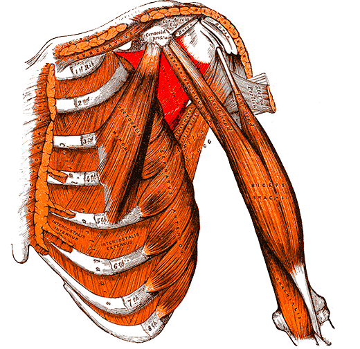
A rotátorköpeny↗I. A rotátorköpeny izmai (SITS izomcsoport)
Lapocka alatti izom (m. subscapularis) – tónusos
EredésA lapocka elülső, bordák felőli felszíne (fossa subscapularis).
TapadásA felkarcsont kis gumója (tuberculum minus humeri).
MozgásBefelé forgatja (berotáció) és a törzshöz közelíti (addukció) a felkart, miközben elölről stabilizálja a vállízületet.
 A rotátorköpeny↗
A rotátorköpeny↗I. A rotátorköpeny izmai (SITS izomcsoport)
Tövis feletti izom (m. supraspinatus) – tónusos / túlterhelésre hajlamos
EredésA lapockatövis feletti árok (fossa supraspinata).
TapadásA felkarcsont nagy gumójának legfelső benyomata (tuberculum majus humeri).
MozgásMegindítja a kar törzstől való távolítását (abdukció) az első 15–30 fokban, és felülről az ízületi vápába húzza a felkarcsont fejét.
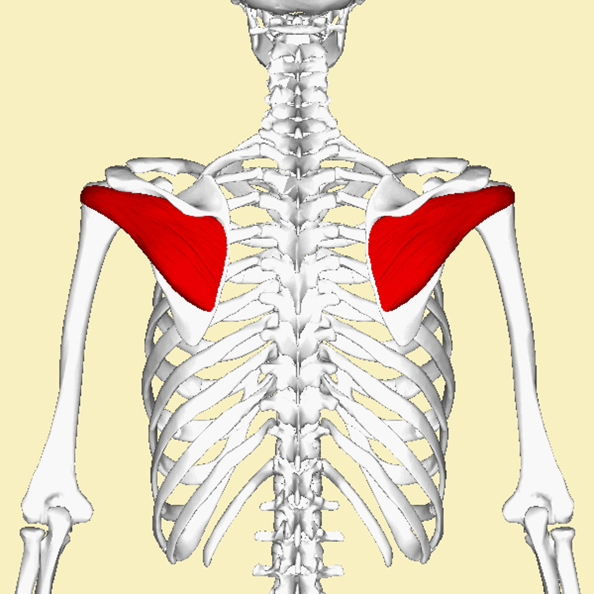
A rotátorköpeny↗I. A rotátorköpeny izmai (SITS izomcsoport)
Tövis alatti izom (m. infraspinatus) – fázisos
EredésA lapockatövis alatti árok (fossa infraspinata).
TapadásA felkarcsont nagy gumójának középső benyomata (tuberculum majus humeri).
MozgásA vállízület legerősebb kifelé forgató (kirotáló) izma, amely hátulról is stabilizálja a felkarcsont fejét.
 A rotátorköpeny↗
A rotátorköpeny↗I. A rotátorköpeny izmai (SITS izomcsoport)
Kis görgetegizom (m. teres minor) – fázisos
EredésA lapocka külső (hónalji) szélének felső kétharmada.
TapadásA felkarcsont nagy gumójának alsó benyomata (tuberculum majus humeri).
MozgásKifelé forgatja (kirotáció) és enyhén a törzshöz közelíti a felkart, miközben hátulról rögzíti a vállízületet.
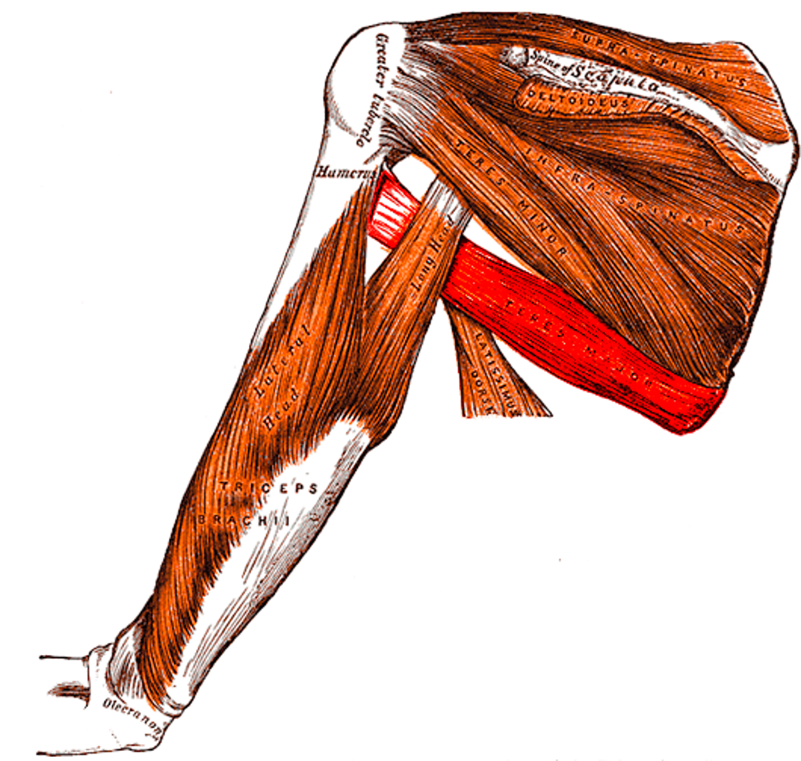
A rotátorköpeny↗II. A rotátorköpenyen kívüli vállizmok
Nagy görgetegizom (m. teres major) – tónusos
Nem része a rotátorköpenynek; működésében a széles hátizom kis segítője.
EredésA lapocka alsó szögletének hátulsó felszíne.
TapadásA felkarcsont kis gumójának taraja (crista tuberculi minoris humeri).
MozgásRögzített lapocka mellett befelé forgatja (berotáció), a törzshöz közelíti (addukció) és hátrahúzza (extenzió) a felkart.
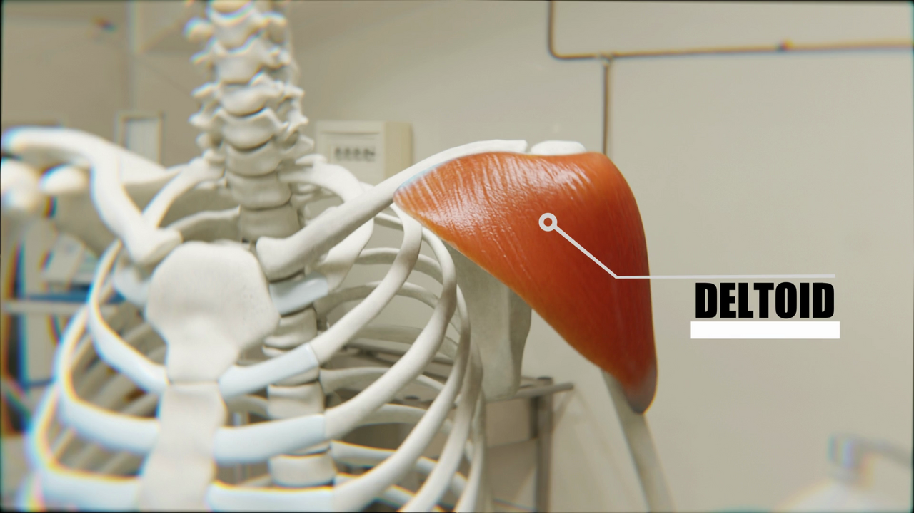
A rotátorköpeny↗II. A rotátorköpenyen kívüli vállizmok
Deltaizom (m. deltoideus) – vegyes (elülső része tónusos, középső és különösen a hátsó része fázisos)
A váll lekerekített kontúrját adó, három részből álló felületes izom.
EredésA kulcscsont külső harmada, a vállcsúcs (acromion) és a lapockatövis (spina scapulae).
TapadásA felkarcsont külső oldalán található deltaérdesség (tuberositas deltoidea humeri).
MozgásFő feladata a kar vízszintesig való távolítása (abdukció), miközben elülső rostjai előreemelik és befelé, hátulsó rostjai pedig hátrahúzzák és kifelé forgatják a kart.
TESTTÁJÉK
A konyok
5 adatlap
I. A könyök hajlító izmai (Flexorok)
Kétfejű karizom (m. biceps brachii) – tónusos
EredésHosszú feje a lapocka ízületi vápája feletti gumón (tuberculum supraglenoidale), rövid feje a lapocka hollócsőrnyúlványán (processus coracoideus).
TapadásAz orsócsont érdességén (tuberositas radii) és az alkar pólyáján.
MozgásHajlítja (flexió) és kifelé fordítja (szupinálja) az alkart a könyökízületben, valamint segíti a felkar előreemelését.
I. A könyök hajlító izmai (Flexorok)
Karizom (m. brachialis) – tónusos
A bicepsz alatt mélyen elhelyezkedő, legtisztább könyökhajlító izom.
EredésA felkarcsont elülső felszínének alsó felén.
TapadásA singcsont érdességén (tuberositas ulnae), közvetlenül a könyökízület alatt.
MozgásAz alkar elfordított helyzetétől függetlenül erőteljesen hajlítja (flexió) a könyökízületet.
I. A könyök hajlító izmai (Flexorok)
Kar-orsócsonti izom (m. brachioradialis) – tónusos
EredésA felkarcsont külső (oldalsó) élének alsó harmadán.
TapadásAz orsócsont íróvesszőnyúlványa (processus styloideus radii) felett, a csukló közelében.
MozgásHajlítja a könyököt (különösen középállású, "kalapács" kéztartásnál), és a szélső helyzetekből középállásba forgatja az alkart.
II. A könyök feszítő izmai (Extenzorok)
Háromfejű karizom (m. triceps brachii) – vegyes (hosszú feje hajlamos a rövidülésre/tónusos, a külső és belső feje inkább fázisos)
EredésHosszú feje a lapocka ízületi vápája alatti gumón (tuberculum infraglenoidale), külső és belső (mély) feje a felkarcsont hátulsó felszínén.
TapadásA singcsont könyökcsúcsán (olecranon ulnae).
MozgásErőteljesen kinyújtja (extenzió) a könyökízületet és stabilizálja azt nyújtott helyzetben, hosszú feje pedig hátrahúzza és a törzshöz közelíti a felkart.
II. A könyök feszítő izmai (Extenzorok)
Könyökizom (m. anconeus) – fázisos
EredésA felkarcsont külső könyökdudorán (epicondylus lateralis humeri).
TapadásA singcsont felső, külső-hátulsó felszínén.
MozgásSegíti a könyökízület feszítését (extenzió), és megfeszíti az ízületi tokot, védve azt a becsípődéstől.
TESTTÁJÉK
Az alkar
1 adatlap
Áttekintés
Az alkar
Az alkar belső, tenyér felőli oldalán futó izomcsoport, amely a fogóerőért felel.
EredésFőként a felkarcsont belső könyökdudorán (epicondylus medialis humeri), valamint az alkarcsontok elülső felszínén.
TapadásA kéztőcsontokon, a kézközépcsontok tenyéri alapján és az ujjak ujjperceinek tenyéri oldalán.
MozgásTenyér felé hajlítják (palmarflexió) a csuklót, ökölbe szorítják az ujjakat, és részben befelé forgatják (pronálják) az alkart.
Az alkar külső, kézhát felőli oldalán futó izomcsoport, amely a fogás elengedéséért és a csukló stabilizálásáért felel.
EredésFőként a felkarcsont külső könyökdudorán (epicondylus lateralis humeri), valamint az alkarcsontok hátulsó felszínén.
TapadásA kézközépcsontok kézháti alapján és az ujjak ujjperceinek kézháti oldalán.
MozgásKézhát felé hátrafeszítik (dorsalflexió) a csuklót, kinyújtják az ujjakat az ökölből, és részben kifelé forgatják (szupinálják) az alkart.
Nincs találat. Próbálj meg másik izomnevet vagy testtájat.